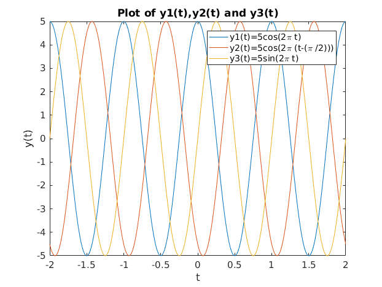
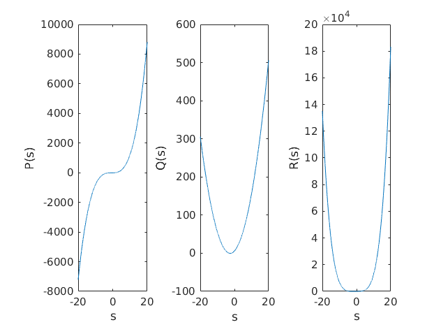
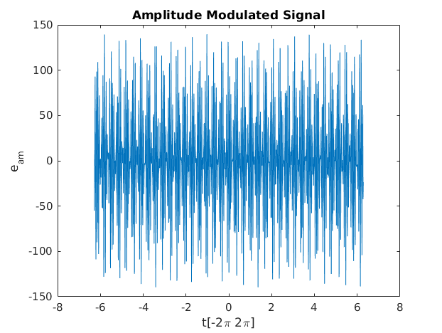

Contents
%quiz 3 clc; clear; close all;
Question 1
y1(t)=5cos(2 pi t) y2(t)=5cos(2pi(t-(pi/2))) y3(t)=5sin(2pi t) t=[-2 2]
t=linspace(-2,2,1000); y1=5.*cos(2*pi.*t); y2=5.*cos(2*pi*(t-(pi/2))); y3=5*sin(2*pi.*t); figure plot(t,y1,t,y2,t,y3),xlabel('t'),ylabel('y(t)'),legend('y1(t)=5cos(2\pi t)',... 'y2(t)=5cos(2\pi (t-(\pi /2)))','y3(t)=5sin(2\pi t)'),... title('Plot of y1(t),y2(t) and y3(t)');
Question 2
P(s) = s^3 + 2s^2 + s- 5 Q(s) = s^2 + 5s + 6 R(s) = s^4 + 3s^3 -2s^2 + 4s - 10 s=[-20 20]
S=linspace(-20,20,10000); P=[1 2 1 -5]; Q=[1 5 6]; R=[1 3 -2 4 10]; P1=polyval(P,S); Q1=polyval(Q,S); R1=polyval(R,S); figure subplot(1,3,1); plot(S,P1),xlabel('s'),ylabel('P(s)'); subplot(1,3,2); plot(S,Q1),xlabel('s'),ylabel('Q(s)'); subplot(1,3,3); plot(S,R1),xlabel('s'),ylabel('R(s)');
Question 3
disp('H(s)') % x is the quotient and y is the remainder [x,y]=deconv(R,Q) disp('T(s)') [x,y]=deconv(P,Q) disp('Z(s)') [x,y]=deconv(R,P) disp('W(s)') [x,y]=deconv(P,R) disp('V(s)') [x,y]=deconv(Q,R) disp('U(s)') [x,y]=deconv(Q,P)
H(s)
x =
1 -2 2
y =
0 0 0 6 -2
T(s)
x =
1 -3
y =
0 0 10 13
Z(s)
x =
1 1
y =
0 0 -5 8 15
W(s)
x =
0
y =
1 2 1 -5
V(s)
x =
0
y =
1 5 6
U(s)
x =
0
y =
1 5 6
Question 4
Determining the partial fraction of the above deconvolution
disp('Calculating partial fraction...') disp('H(s)') [r,p,k]=residue(R,Q) disp('T(s)') [r,p,k]=residue(P,Q) disp('Z(s)') [r,p,k]=residue(R,P) disp('W(s)') [r,p,k]=residue(P,R) disp('V(s)') [r,p,k]=residue(Q,R) disp('U(s)') [r,p,k]=residue(Q,P)
Calculating partial fraction...
H(s)
r =
20.0000
-14.0000
p =
-3.0000
-2.0000
k =
1 -2 2
T(s)
r =
17.0000
-7.0000
p =
-3.0000
-2.0000
k =
1 -3
Z(s)
r =
-3.4615 - 1.7687i
-3.4615 + 1.7687i
1.9230 + 0.0000i
p =
-1.5582 + 1.4321i
-1.5582 - 1.4321i
1.1163 + 0.0000i
k =
1 1
W(s)
r =
0.5496 + 0.0000i
0.3998 + 0.0448i
0.3998 - 0.0448i
-0.3493 + 0.0000i
p =
-3.6435 + 0.0000i
0.8947 + 1.2628i
0.8947 - 1.2628i
-1.1459 + 0.0000i
k =
[]
V(s)
r =
-0.0191 + 0.0000i
-0.0455 - 0.4506i
-0.0455 + 0.4506i
0.1101 + 0.0000i
p =
-3.6435 + 0.0000i
0.8947 + 1.2628i
0.8947 - 1.2628i
-1.1459 + 0.0000i
k =
[]
U(s)
r =
-0.1969 - 0.2900i
-0.1969 + 0.2900i
1.3937 + 0.0000i
p =
-1.5582 + 1.4321i
-1.5582 - 1.4321i
1.1163 + 0.0000i
k =
[]
Finding the roots P(s),Q(s) and R(s)
disp('Calculating the roots of P(s), Q(s) and R(s)') disp('Roots P(s)') roots(P) disp('Roots Q(s)') roots(Q) disp('Roots R(s)') roots(R)
Calculating the roots of P(s), Q(s) and R(s) Roots P(s) ans = -1.5582 + 1.4321i -1.5582 - 1.4321i 1.1163 + 0.0000i Roots Q(s) ans = -3.0000 -2.0000 Roots R(s) ans = -3.6435 + 0.0000i 0.8947 + 1.2628i 0.8947 - 1.2628i -1.1459 + 0.0000i
Calculating for L(s)
L=polyder(conv(Q,R))
L =
6 40 76 36 36 74
Plotting Amplitude modulated signal
Tam=linspace(-2*pi,2*pi,1000); fm=4*10^3; fc=99.5*10^6; Ec=40; Em=100; Mam=Em/Ec; Eam=Ec.*(1+Mam*(sin(2*pi*fm.*Tam))).*sin(2*pi*fc.*Tam); figure plot(Tam,Eam),xlabel('t[-2\pi 2\pi]'),ylabel('e_{am}'),title('Amplitude Modulated Signal')